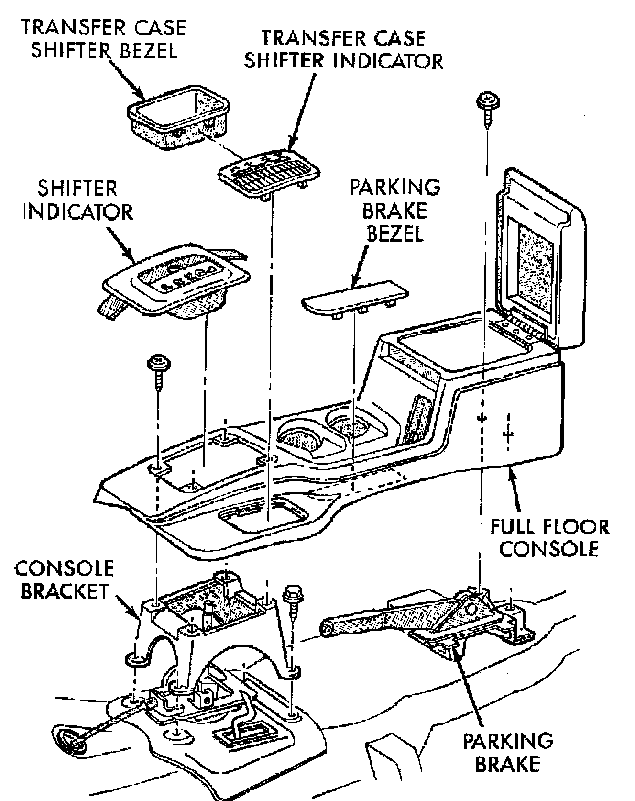

Console Replacement
FLOOR CONSOLE

REMOVAL
1. Pull transmission shift lever handle straight up and remove handle.
2. Remove transmission and transfer case shift indicator bezels by prying upward to release them. Position flat screwdriver between bezel and console to remove indicator bezel.
3. Disconnect lamp sockets from bezels.
4. Remove console retaining screws.
5. Remove console from floor.
INSTALLATION
1. Reverse removal procedure.